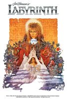
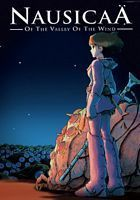
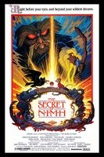
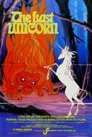
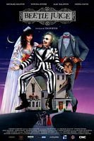
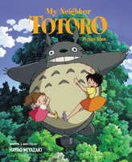
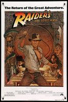
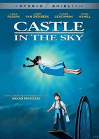
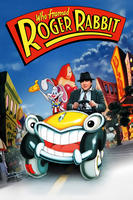
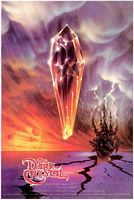

Welcome to the 30th Annual Brookyln Outdoor Film Festival!
This year we are hosting a special listing of films to help celebrate this special occassion. We are going to show our original line up of Fantasty films that our festical first aired in 1988.
On August 5th 2018
We will be showing three classical films, the first is The Princess Bride (1987), Labyrinth (1986) and The Wizard of Oz (1939)
The Princess Bride

Jim Henson's Labyrinth

The Wizard of Oz

On August 6th
We will be showing animated classics of Nausica and the Valley of the Wind (1984), The Secret of Nihm (1982) and the Last Unicorn (1982)
Nausicaa and the Valley of the Wind

The Secret of Nihm

The Last Unicorn

On August 7th
We will be showing Beetlejuice (1988), My Neighbor Totoro (1988) and and Raiders of the Lost Ark (1981)
Beetlejuice

My Neighbor Totoro

Raiders of the Lost Ark

On August 8th
We will be showing more aminated classics like Castle in the Sky (1986), Who Framed Roger Rabbit (1988) and The Dark Crystal(1982)
Castle in the Sky

Who Framed Roger Rabbit

The Dark Crystal
